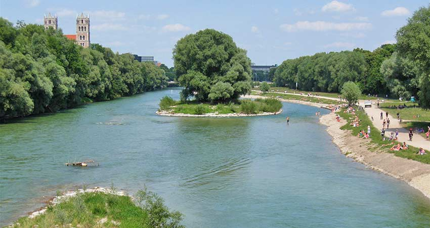

So we are here in Munich. Let's check out the Isar.
I could name a few places. All very famous and along the Isar. Flaucher for example. A little bit upstream for families and friends. Or Georgenstein even further south. No very crowded and a nice opportunity to jump in the river. But one of the best places to be is the Weideninsel. Right in the center. A place for the rich and beautiful. A place to see and be seen. So check it out. On nice summer evenings it feels like a festival.
Back